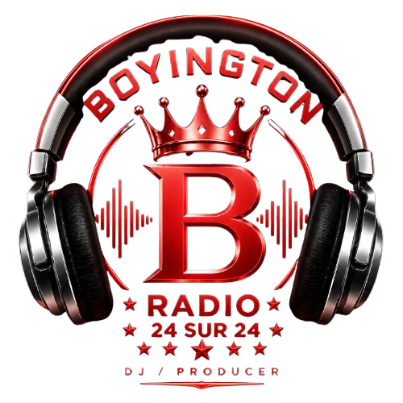

<!-- ========================= -->
<!-- AJOUT BOYINGTON WEB RADIO -->
<!-- À placer dans .social-grid -->
<!-- juste après le bouton YouTube -->
<!-- ========================= -->

<a class="social-link is-wide"
   href="https://boyingtonremix.github.io/Web-Radio-BOYINGTON-REMIX-24-24/"
   target="_blank"
   rel="noopener noreferrer"
   style="
     display:flex;
     align-items:center;
     justify-content:center;
     gap:12px;
     padding:14px;
     background:linear-gradient(
       135deg,
       rgba(212,175,55,0.10),
       rgba(255,0,0,0.10)
     );
   ">

  

  <div style="text-align:left;">
    <div style="
      color:#f1cd63;
      font-weight:bold;
      letter-spacing:0.08em;
      text-transform:uppercase;
      font-size:0.88rem;">
      Boyington Web Radio
    </div>

    <div style="
      color:#d0d0d0;
      font-size:0.76rem;
      margin-top:2px;">
      Écouter la radio officielle 24/7
    </div>
  </div>

</a>
